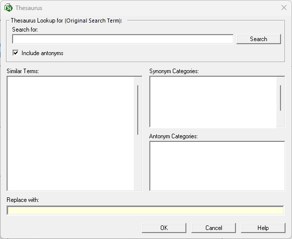

This command can also be executed from the SI Editor's Right-click menu or by using the keyboard shortcut F8.
The Thesaurus Lookup command is a fundamental feature in most editors and word processors. It is crucial for maintaining the professional quality of technical specifications by ensuring precise terminology and minimizing unclear terms. This tool provides synonym/antonym or similar term substitution and grammatical usage suggestions (e.g., noun, verb, or adjective) for the selected word.
 The Thesaurus Lookup for label is a static reference that consistently displays the original lookup word initiated by the Thesaurus Lookup, allowing users to track the foundational word while exploring suggested replacements.
The Thesaurus Lookup for label is a static reference that consistently displays the original lookup word initiated by the Thesaurus Lookup, allowing users to track the foundational word while exploring suggested replacements.

- Thesaurus Lookup for - Defines the search conditions.
- Search for - Initially displays the selected word for a quick starting point and allows you to manually input a word or double-click on a word in the Similar Terms or Categories lists to begin a new search.
- Search button - Executes a search to generate a list of replacement words for the term entered in the Search for field.
- Include antonyms - Suggests words with the opposite meaning of the word displayed in the Search for field. This option activates the Antonym Category list.
- Similar Terms - Displays the primary dynamic list of word substitutions that have the same or similar meaning and can replace the selected term. These terms are related to the term displayed in the Search for field. The replacement word is chosed by single-clicking a word in this list, which automatically inserts it into the Replace with field. To perform a new search, double-click a word to add that word directly to the Search for field.
- Categories - The primary filter used to populate the Similar Terms list with related words (synonyms or antonyms). Grammatical labels (e.g., noun, verb, and adjective) are provided with each category to ensure proper usage and integration.
- Synonym Categories - Displays a list of grammatical categories (e.g., noun, verb, adverb, and adjective) with the same or similar meaning of the Search for term and populates the Similar Terms list with terms similar to the selected Synonym Category.
- Antonym Categories - Displays a list of grammatical categories (e.g., noun, verb, adverb, and adjective) with the opposite meaning and populates the Similar Terms list with terms similar to the selected Antonym Category. This list is only populated when the Include Antonyms option is selected.
- Replace with - Replaces the word in the Search for field with the selected word from the Similar Terms list.
Standard Windows Commands
 The OK button will execute and save the selections made.
The OK button will execute and save the selections made.
 The Cancel button will close the window without recording any selections or changes entered.
The Cancel button will close the window without recording any selections or changes entered.
 The Help button will open the Help Topic for this window.
The Help button will open the Help Topic for this window.
How To Use This Feature
 To Replace a Word Using the Thesaurus:
To Replace a Word Using the Thesaurus:
- In the SI Editor, double-click to select a word, then perform one of the following:
- Right-click and select Thesaurus Lookup
- Select the Tools menu and select Thesaurus Lookup
- Use the keyboard shortcut F8
- In the Thesaurus window, below Thesaurus Lookup for, perform one of the following:
- Leave Include antonyms unchecked
- Check Include antonyms to display the Antonym Categories
- In the Similar Terms list, perform one of the following:
- Select a word in the Similar Terms list to insert it into the Replace with field
- Select a different category in the Synonym or Antonym Categories list, then select a word in the Similar Terms list to insert it into the Replace with field
- Once the desired word is in the Replace with field, click OK
To Search For a New Word in the Thesaurus and Replace the Existing Word:
- In the Thesaurus window, perform one of the following:
- Enter a new word in the Search for field, then perform the following:
- Press Enter or click the Search button to populate the Categories and Similar Terms lists
- Select a word in the Similar Terms list to insert it into the Replace with field
- Double-click a word in the Similar Terms or Categories list to insert it into the Replace with and Search for fields and generate new Categories and Similar Terms lists
- Once the desired word is in the Replace with field, click OK
Users are encouraged to visit the SpecsIntact Website's Support & Help Center for access to all of our User Tools, including Web-Based Help (containing Troubleshooting, Frequently Asked Questions (FAQs), Technical Notes, and Known Problems), eLearning Modules (video tutorials), and printable Guides.